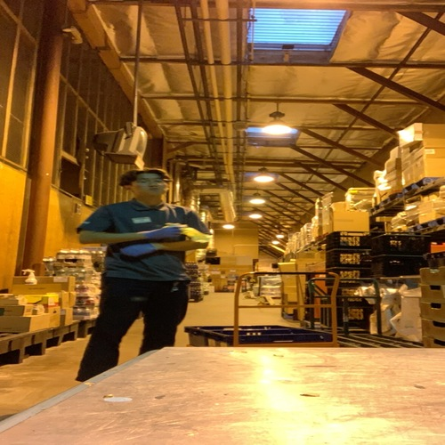
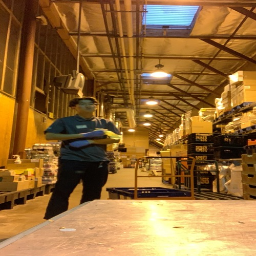

Chan Young Lim
Hi, My name is Chan Young Lim. I am a second year Business major at the University of California. My path to my professional career started in high school. I graduated in 2020 at Mount Carmel High School, which is located in San Diego, California.
During High School, I began to work at a grocery store, called Pavilions. Initially, I thought nothing of this job but later on realized the deeper meanings and lessons this job had brought to me. At pavilions, I started at the position of being a courtesy clerk. The responsibility of a courtesy clerk is to simply bag the customer’s groceries and treat them with respect. This position seemed easy to me but later became very tiring as I was standing and bagging groceries for hours on end. This tested my physical and mental endurance as it was my responsibility to give respect and bag groceries for customers. After a couple of months, my store manager had promoted me to a day stocker. The roles of the day stocker were to simply stock items on the shelves that were empty or lacking supplies. With this role came other tasks as well. My customers would often ask me to “check in the back” or ask where certain products were at. This job position, personally, was the easiest as I would be able to work at my own pace as long as I would be able to successfully stock the shelves. Although, after long periods of time, I would get extremely physically tired from lifting and carrying loads of items around the store to the shelves. With this position promotion, I was also granted more access to the store than a normal courtesy clerk. The manager often left me with the store keys, whether it was to open the back gate for truck drivers or helping customers pick out alcohol from the locked glass cooler. As I continued day stocking, I turned 18 years old. Once I did, the manager had trained me to work the register, the self-check-out registers, and even work the forklifts. After a few months of being the main day stocker of the store, my manager believed I was ready to expand my knowledge each department of the store. He began to work with me in each store department every shift and later decided to dedicate me to one department. It was the “curb-side” delivery department. With COVID-19 being a very intense and chaotic time, this department was the busiest department. I was put to the challenge to successfully manage and execute the duties and tasks of this department. I began to organize online orders for the day and began to shop the orders when the store opened. A few hours later, the customers would arrive, and I would be responsible for delivering their groceries. As the shift went on, the challenge of balancing deliveries and shopping online orders became more of a challenge. Throughout the shift, I was responsible for answering phone calls while shopping and delivering the customer's orders. After a couple of weeks working in this department, I realized that this was the hardest challenge that I have experienced since working at this store. months after resigning from this position, I began to realize that this Challenge and hardship was an insight to what real life was like. To elaborate on this meaning, I realized that this job had allowed me to strengthen my weaknesses and refined my strengths as an individual to prepare myself for the future careers that were ahead of me.
After quitting the position at the grocery store, I began my first year at the University of California, Riverside. As a previous biology major, I was interested in the medical field and becoming a physician and surgeon. With this inspiration, I began to look for internships and opportunities to observe and Shadow Physicians. luckily, I was able to come into contact with a neurosurgeon who allowed me to work under him as his office assistant. this position came with many responsibilities, as I was in charge of organizing, scheduling, screening all of this surgeon’s tasks. this job gave me a very realistic insight on what my future career would potentially look like as this is what I was inspired to do. initially, I was very excited to be able to help around the hospital and the neurosurgeon with whatever he needed assistance with. Over time, the mountain of obstacles that seemed impossible to conquer now became a light daily routine. I realized that the extreme amount of physical and mental health from my previous job, at the grocery store, had somewhat prepared me for this job and its requirement of loads of work that it had brought me. Since I had this job during my first year of university, it became very fun to be able to go out and physically go somewhere and do something rather just sitting at a computer screen all day. After a couple of months at this position, I became equipped to the daily routine of sending emails, answering phone calls, and screening patients. Although having an organized routine was satisfying, I began to realize that this might be something I might not wish to continue for the rest of life. I began to slowly lose interest in the medical field and studying life science and biology. I slowly felt as ability to reach the goal of becoming a physician was way too distant and at one point, unattainable.
This was the beginning of the end of my vision of becoming a physician. But although this door was coming to an end, I always believed a new door would open. After giving myself some time to think, I began to overview the different presentable opportunities that other majors and careers would be able to provide for me. While I was searching for a new opening, business was something that very appealing and caught my attention. The more I began to look further into the business major, the more interested I became. The opportunities to succeed and learn felt endless. With the business major having my interest, I decided to discuss this idea to my parents. At first, they were very upset and in denial. As I grew up in a very traditional Asian family, becoming a physician was the vision my parents had implemented into my brain. At some point, I felt as if I was disappointing my parents, but the other half reminded myself that change is a good thing and it required for an individual to grow and involve. After a long and troubling argument, I was able to convince my parents that this decision is something that could potentially better myself, as I felt the potential success was worth the risk I was taking. I had to remind my parents that this decision that I have brought upon them is not permanent and it is simply something for me to explore my future career paths.
br>
Now that I am in the Pre Business program at the University of California, Riverside, I feel that my decision has been a great learning experience as I learning something new every day. Although learning some concepts of business can be difficult to understand, many hours or studying and help has allowed my ability to understand the concepts of business. Now being in the second quarter of being in the business program, I feel as if I have learned so much knowledge with the help of the great facilities provided at this university. With positivity and an open mind, I am ready to take on and challenge myself with the obstacles presented through my journey to graduate with a bachelors degree in business.
With my academic and work experience being explain, I would like to discuss my active membership of the RIDES@UCR. This club is a school club at the university where individuals, such as I, hold a common interest of enjoyment of cars and what they represent. At first, I was very hesitant on joining this club. I was not sure of the environment that I would be entering, which was something that made me anxious. Once I joined the club, I never looked back. I am very happy and glad that I joined as the other members of the group are very approachable and friendly. They are always willing to listen and have fun. This club has also made me realize the beautiful environment of students in which I entered. After this realization, I started to be more social and outgoing as the positive energy of this club made me want to exploit this feeling towards others too.
Overall, my life experience and journey has been very up and down. Although I did not like the lows, this had definitely taught me many valuable life lessons that I carry on throughout my daily life. As for the positive moments, I remember to cherish to these moments as these highs make me realize the negative moments of my life and how I was able to conquer these obstacles and continue my journey to reach my goal of success.
Experience
Office Assistant
• Office Assistant for Dr. Kevin Yoo M.D.
• Organizing Dr. Yoo's Documents, Emails, and Phone Calls
• Providing Exceptional Customer Service
• Screening Patients Before Their Appointment With Dr. Yoo
Courtesy Clerk/ DayStocker/ Curb-Side Delivery Leader
• Providing Excpetional Customer Service
• Schedule, Shop, and Deliver Grocery Pick-Ups Orders
• Stocking Items In All Store Departments
• Assisting the Store Manager With Various Projects and Duties
Active Club Member, Rides@UCR
• Contacting Companies For Collaborations and Fundraisers
• Introducing Other Students About The Club
• Providing A Safe Environment For Those Who Share A Common Interest
Education
University of California Riverside
Mount Carmel High School
Portfolio
.jpeg)


